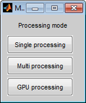
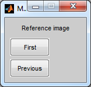
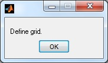
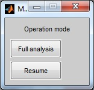
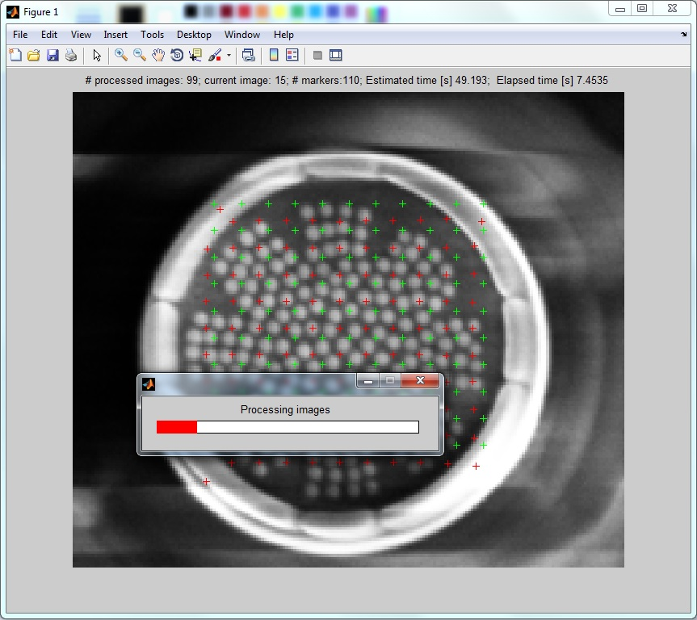
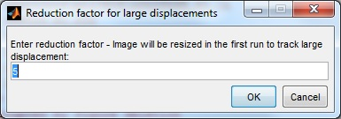
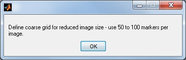
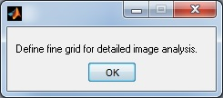

This is the central function for calculating and processing correlations on all markers and images. Therefore, the current directory in MATLAB has to be the folder where the files 'filenamelist.mat', 'CustomFilter.cfg','gridx.dat' and 'gridy.dat' are stored. To start the procedure click the button 'Process correlations' or type 'ProcessCorrelations;' at the MATLAB command line and press 'ENTER'.
First navigate to the file or directory containing your 'filenamelist.mat' file and your images to be tracked.
You need to choose between 'Single processing', 'Multi processing' (parallel computing) and 'GPU processing'. The latter only works for nvidia graphic cards with cuda support.

Specify the reference image for correlation: 'First' (default of old version) or 'Previous'. If you select 'Previous', you are asked for a stack size after which the reference is renewed (e.g. 1: each time, 20: after 20 time steps).

If you expect small displacements between the images, select 'Small displacements', otherwise proceed with 'Large displacements'. For large displacements you can choose between:
Define the grid for calculating correlations, either load an existing grid or create a new one as described in Generate grid.

Select the operation mode, you can either run a full analysis (which is the standard case) or you can resume a previous calculation that has crashed or has been interrupted by the user.

For a full analysis, the first (base) image from 'filenamelist.mat' is opened and the grid is plotted as green crosses on top. The base image is correlated with each image from 'filenamelist.mat'. For each correlation result, the new raster positions are plotted as red crosses, and the green crosses for the initial grid on top of the image. The time for processing all images will be plotted on the figure. The filters from the filter list 'CustomFilter.cfg' are applied to each image when processing.

Depending on the number of images and markers you are tracking, this process can take between seconds and days. For 100 images and 200 markers, a decent computer should need 200 seconds. To obtain a better result, you can always run jobs overnight with higher resolutions (e.g. 6000 markers in 1000 images).
Keep in mind that 'CORRSIZE' which you changed in 'cpcorr.m' will limit your resolution. If you chose to use the 15 pixel as suggested a marker distance of 30 pixels will lead to a full cover of the strain field. Choosing smaller marker distances will lead to an interpolation since two neighboring markers share pixels. Nevertheless a higher marker density can reduce the noise of the strain field.
When all images are processed, the files 'validx.dat' and 'validy.dat' will be written. These files contain the coordinates of the marker positions in a text based format which can be accessed by any desired editor. The standard deviations of the markers are stored in 'stdx.dat' and 'stdy.dat'.
To stop 'ProcessCorrelations', use the key combination 'Ctrl-C'.
This advanced procedure compensates large displacements between images which might result from a low image acquisition rate or from large oscillations. Therefore, we first calculate the correlations on a list of images with reduced size on a coarse grid. Subsequently, we determine the correlations for the original sized images on a fine grid taking into account the results of the first step by:
First you will be asked for a reduction factor.

Then you need to provide a coarse grid (that will be saved in 'gridxcoarse.dat' and 'gridycoarse.dat') for a pre-calculation of the correlations in the reduced images. Either load an existing grid or create a new one as described in Generate grid.

In a next step you will be asked for a fine grid (that will be saved in 'gridxfine.dat' and 'gridyfine.dat') to calculate the correlations in the original images. Either load an existing grid or create a new one as described in Generate grid.

Finally, the correlations will be determined first for the coarse grid and second for the fine grid. For each correlation result, the new raster positions are plotted as red crosses, and the green crosses for the initial grid on top of the image. The time for processing all images will be plotted on the figure. When all images are processed, the files 'validx.dat' and 'validy.dat' (coordinates of the marker positions) will be written. The standard deviations of the markers are stored in 'stdx.dat' and 'stdy.dat'.